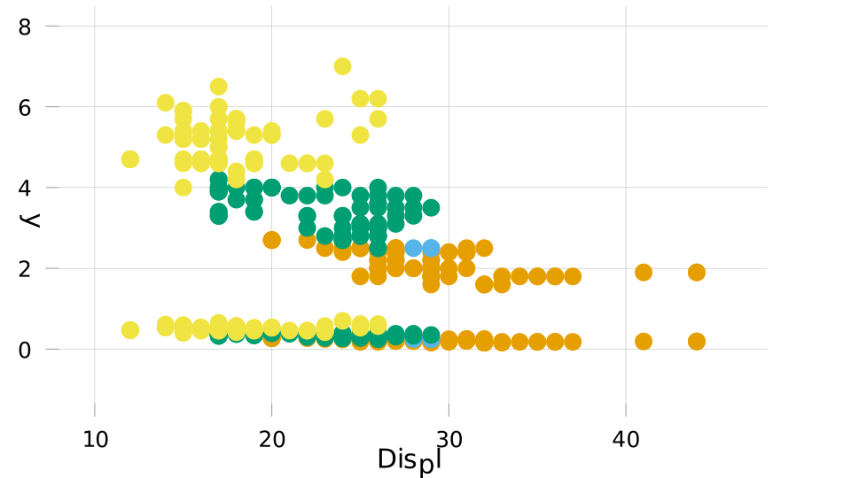

Internals
AlgebraOfGraphics is based on contexts, which can be extended. Each context contains a named tuple data (used for x, y axes or attributes in the plot) and a named tuple primary used for grouping.
Contexts
In the default context, all variables in data are broadcasted to a common shape, and each entry correspond to a separate trace. The syntax dims exists to allow setting primary variables that only vary with one of the dimensions.
using RDatasets: dataset
using AlgebraOfGraphics: table, data, primary
d = data(:Cyl, :Hwy) |> primary(color = :Year)
d.primary(color = :Year,)The primary => data pairs corresponding to each group can be accessed with Base.pairs:
pairs(d.primary)pairs(::NamedTuple) with 1 entry:
:color => :YearThe DataContext is invoked with table(df), where df respects the Tables.jl interface. DefaultContexts can be merged onto a DataContext (column names are replaced by the corresponding arrays).
mpg = dataset("ggplot2", "mpg")
t = table(mpg)
pairs(t |> d)2-element Array{Pair{NamedTuple{(:color,),Tuple{AlgebraOfGraphics.NamedEntry{Int32}}},NamedTuple{(Symbol("1"), Symbol("2")),Tuple{NamedDims.NamedDimsArray{(:Cyl,),Int32,1,SubArray{Int32,1,Array{Int32,1},Tuple{Array{Int64,1}},false}},NamedDims.NamedDimsArray{(:Hwy,),Int32,1,SubArray{Int32,1,Array{Int32,1},Tuple{Array{Int64,1}},false}}}}},1}:
(color = AlgebraOfGraphics.NamedEntry{Int32}(:Year, 1999),) => (1 = [4, 4, 6, 6, 4, 4, 6, 6, 6, 8 … 6, 6, 4, 4, 4, 4, 4, 4, 6, 6], 2 = [29, 29, 26, 26, 26, 25, 25, 25, 24, 17 … 23, 24, 44, 41, 29, 26, 29, 29, 26, 26])
(color = AlgebraOfGraphics.NamedEntry{Int32}(:Year, 2008),) => (1 = [4, 4, 6, 4, 4, 6, 6, 6, 8, 8 … 4, 4, 4, 5, 5, 5, 5, 4, 4, 6], 2 = [31, 30, 27, 28, 27, 25, 25, 25, 23, 20 … 29, 29, 29, 29, 29, 28, 29, 28, 29, 26])The SliceContext is another example. It is inoked with slice(I::Int...), and signals along which dimension on the data to slice to extract series.
using AlgebraOfGraphics: slice, dims
ctx = slice(1)
x = rand(5, 3, 2)
y = rand(5, 3)
pairs(slice(1) |> data(x, y) |> primary(color=dims(2), marker=dims(3)))1×3×2 Array{Pair{NamedTuple{(:color, :marker),Tuple{Int64,Int64}},NamedTuple{(Symbol("1"), Symbol("2")),Tuple{Array{Float64,1},Array{Float64,1}}}},3}:
[:, :, 1] =
(color = 1, marker = 1)=>(1 = [0.202698, 0.115405, 0.533794, 0.360098, 0.278216], 2 = [0.435556, 0.691259, 0.384542, 0.886253, 0.972085]) … (color = 3, marker = 1)=>(1 = [0.0190629, 0.925699, 0.128401, 0.997741, 0.750795], 2 = [0.279363, 0.167514, 0.727746, 0.697056, 0.672048])
[:, :, 2] =
(color = 1, marker = 2)=>(1 = [0.473982, 0.577686, 0.834032, 0.193462, 0.699027], 2 = [0.435556, 0.691259, 0.384542, 0.886253, 0.972085]) … (color = 3, marker = 2)=>(1 = [0.167941, 0.788189, 0.20501, 0.767868, 0.608079], 2 = [0.279363, 0.167514, 0.727746, 0.697056, 0.672048])Combining operations using trees
Under the hood, DefaultContext, DataContext, and SliceContext all inherit from (oriented) AbstractEdge. AbstractEdges (and more generally Trees) can be combined using + (join at the root), or * (attach the root of one at the leaf of the other).
mpg1 = copy(mpg)
mpg1.Displ = mpg.Displ .* 0.1
tree = (table(mpg) + table(mpg1)) * data(:Hwy, :Displ) * primary(color=:Cyl)TreeThe resulting Tree is a lazy representation of the operations to be performed. One can inspect the results by calling
using AlgebraOfGraphics: outputs
outputs(tree)2-element Array{AlgebraOfGraphics.DataContext{Array{Tuple{OrderedCollections.OrderedDict{Symbol,AbstractArray{T,1} where T},Pair{NamedTuple{(:color,),Tuple{Array{AlgebraOfGraphics.NamedEntry{Int32},0}}},NamedTuple{(Symbol("1"), Symbol("2")),Tuple{Array{NamedDims.NamedDimsArray{(:Hwy,),Int32,1,SubArray{Int32,1,Array{Int32,1},Tuple{Array{Int64,1}},false}},0},Array{NamedDims.NamedDimsArray{(:Displ,),Float64,1,SubArray{Float64,1,Array{Float64,1},Tuple{Array{Int64,1}},false}},0}}}}},1}},1}:
DataContext of length 4
DataContext of length 4or even
using AlgebraOfGraphics: spec
using AbstractPlotting, CairoMakie
tree * spec(Scatter, markersize=1) |> plot One can give different specs to the two datasets, for example a different position in the layout:
using MakieLayout
using AlgebraOfGraphics: layoutplot
ts = table(mpg) * spec(layout_x=1) + table(mpg1) * spec(layout_x=2)
tree = ts * data(:Hwy, :Displ) * primary(color=:Cyl)
tree * spec(Scatter, markersize=1) |> layoutplot
AbstractPlotting.save("layoutplot.svg", AbstractPlotting.current_scene()); nothing #hide
Implementing a new context
To implement a new context, one needs to:
inherit from
AbstractEdge(to support+and*operations),define a method
(s2::DefaultContext)(s1::MyContext)(to allow applyingprimaryanddatatoMyContext),define
Base.pairs(s::MyContext), which iteratesprimary => datapairs.
See example implementation in the context file.
This page was generated using Literate.jl.